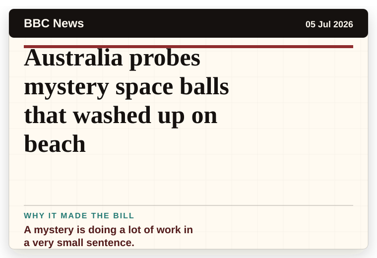
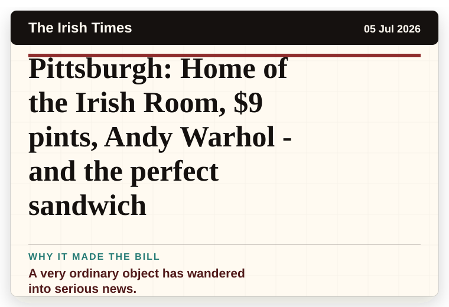
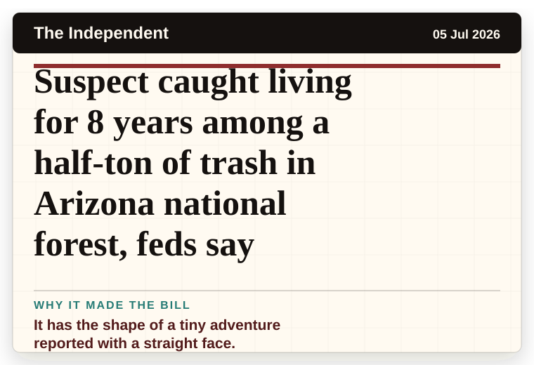
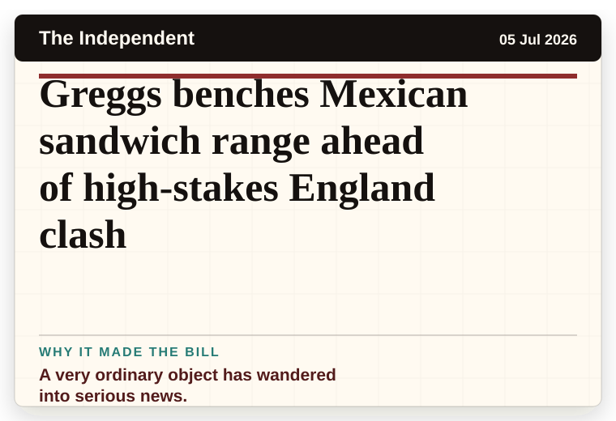
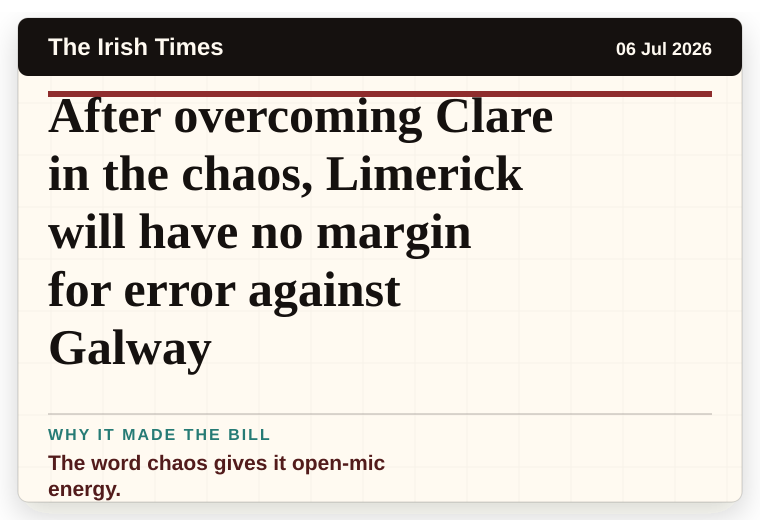
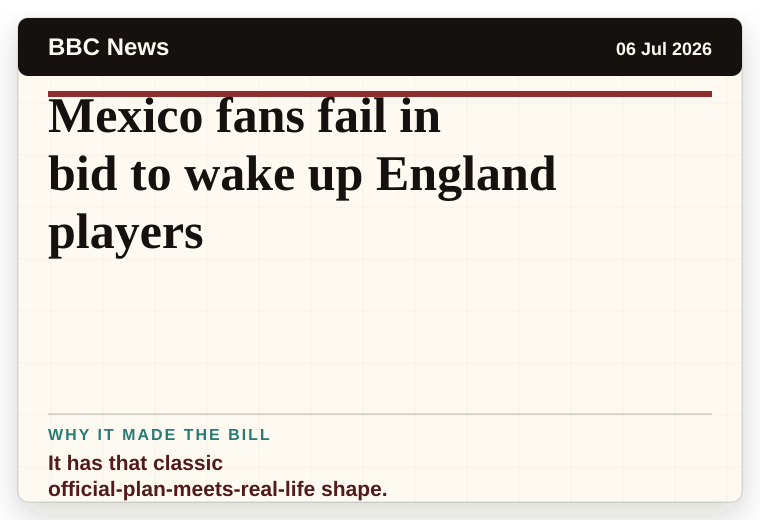
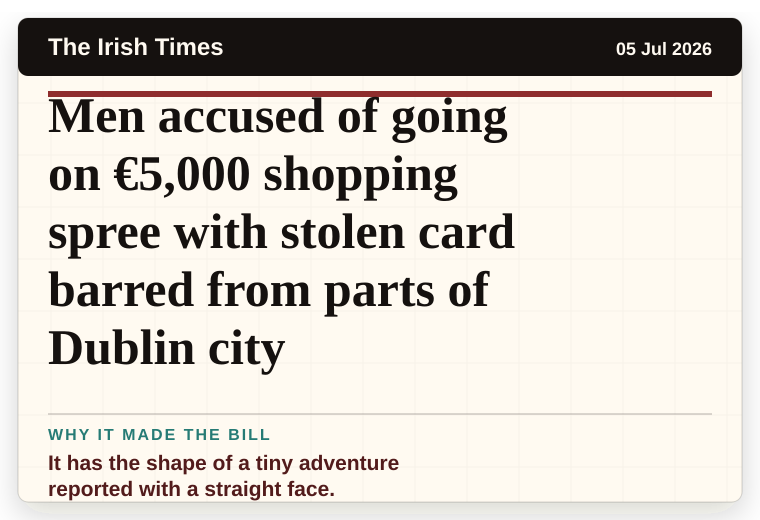

Daily Star Weird News
United Kingdom
How the world became gripped by the hunt for aliens and the battle for disclosure
A wonderfully specific detail has taken centre stage.
The latest daily picks, linked back to the original sources. Search the room, pick a source, or follow a headline out to the full story.
Record updated: 06 Jul 2026, 08:29 AM AEST
Showing 14 headline candidates from the refresh run completed on 06 Jul 2026, 08:29 AM AEST.
A wonderfully specific detail has taken centre stage.

A very ordinary object has wandered into serious news.

The scale is doing deadpan comedy.

A mystery is doing a lot of work in a very small sentence.

A mystery is doing a lot of work in a very small sentence.

The scale is doing deadpan comedy.

It has the shape of a tiny adventure reported with a straight face.

A mystery is doing a lot of work in a very small sentence.

A very ordinary object has wandered into serious news.

It has the shape of a tiny adventure reported with a straight face.

A very ordinary object has wandered into serious news.

The word chaos gives it open-mic energy.

It has that classic official-plan-meets-real-life shape.

It has the shape of a tiny adventure reported with a straight face.